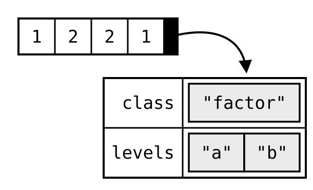
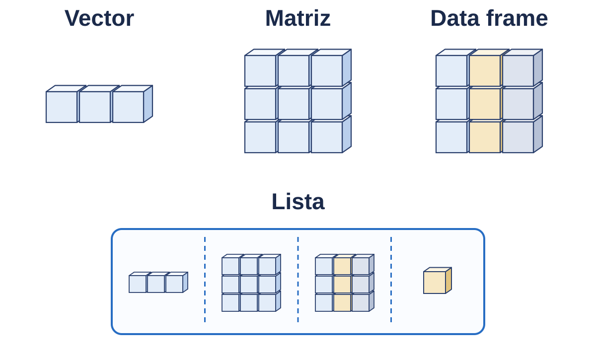
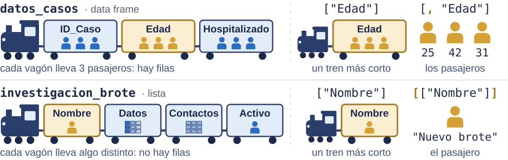

3 Tipos y estructuras de datos
Tema 02 · unidad teórico-práctica
Elegir la estructura de datos que corresponde al problema —vector, matriz, factor, data frame o lista— y justificar la elección; y seleccionar subconjuntos de datos por posición, por nombre y por condición lógica sin escribir un solo ciclo.
Este capítulo es una escalera, no una lista de temas. Cada estructura aparece porque la anterior se queda corta con el problema que sigue. Si se lee como cinco cosas que memorizar, se pierde lo único que importa: reconocer qué te está pidiendo el problema que tienes delante.
3.1 El caso: por qué "42" + 10 no es 52
y <- 10
num <- "42"
y + num
#> Error in y + num : argumento no-numérico para operador binarioPara ti los dos «son 42 y 10». Para R, uno es un número y el otro es texto. El mensaje de error es de los buenos: dice exactamente qué pasó.
Es, además, el error que más aparece en la vida real, cuando se abre un CSV en el que una columna traía un espacio de más, un guion o una coma decimal.
class(num)
#> [1] "character"
class(y)
#> [1] "numeric"
num <- as.numeric(num) # convertir el texto a número
y + num
#> [1] 52class() es la función que más se usa hoy, y as.numeric() inaugura una familia entera: as.character(), as.logical(), as.factor().
as.numeric("hola") devuelve NA con una advertencia, no con un error. Convertir a ciegas es como se pierden datos en silencio: conviene mirar cuántos NA aparecieron después de convertir.
3.2 Los tres tipos básicos
a <- 5 # numérico
b <- 3.14 # numérico
c2 <- 2e3 # numérico: 2000
x <- 5; y <- 10
x < y # lógico: TRUE
x == y # lógico: FALSE
nombre <- "Luis" # carácter
curso <- 'IntroR' # las comillas simples son equivalentesTres apuntes sobre esto:
a <- 5da"numeric", no"integer". R guarda los números comodoublepor defecto; para un entero de verdad hace falta escribir5L.- Las comillas dobles y las simples son equivalentes. Elige unas y no las mezcles dentro de un archivo.
- El nombre
c2está a propósito:cpisaría la funciónc(), que es la que se usa en todo el resto del capítulo (Sección 2.5.3).
3.2.1 Qué contesta class()
class(42) #> "numeric"
class("42") #> "character"
class(TRUE) #> "logical"
class("TRUE") #> "character"
class(42 > 10) #> "logical"
class(NA) #> "logical"Con comillas es texto, siempre: da igual que dentro haya un número o la palabra TRUE. Los pares que se parecen sin ser lo mismo son el primero con el segundo y el tercero con el cuarto. El quinto muestra que una comparación devuelve un lógico, en lugar de escribirlo uno. Y class(NA) da "logical": por ahora basta con saber que NA también tiene tipo.
Esa regla —con comillas es texto— resuelve la mayoría de los problemas de tipos que aparecen con datos reales.
3.2.2 Los tres errores clásicos
"42" + 10 # 1. operar entre tipos incompatibles -> Error
logico <- TRUE # 2. "logical"
texto <- "TRUE" # "character" — no es lo mismo
nombre <- Luis # 3. sin comillas -> Error: objeto 'Luis' no encontradoEl tercero es el traicionero. Sin comillas, R no interpreta Luis como texto: busca un objeto llamado Luis. Si no existe, avisa. Si existe, obedece y te da su contenido, que casi nunca es lo que querías. Un error se convierte así en un bug silencioso.
3.2.3 Un paréntesis: eso que usaste es una función
class() y as.numeric() son funciones: bloques de código con nombre que cumplen una tarea y se reutilizan tantas veces como haga falta, en vez de repetir líneas. Se reconocen por los paréntesis que siguen al nombre, y ?nombre dice qué argumentos aceptan.
Escribir funciones propias es materia de otro curso. Pero conviene nombrar la idea aquí, porque de este punto en adelante todo lo que se hace es llamar funciones.
3.3 Vectores
Un vector es una colección ordenada de elementos del mismo tipo.
v_num <- c(1, 2, 3, 4.5)
v_int <- c(1L, 2L, 3L) # la L fuerza un entero de verdad
v_log <- c(TRUE, FALSE, TRUE)
v_chr <- c("a", "b", "c")c() viene de combine. Y «del mismo tipo» no es un detalle de implementación: es la definición.
3.3.1 Qué pasa si mezclas tipos
c(1, 2, "tres")
#> [1] "1" "2" "tres"
c(TRUE, FALSE, 3)
#> [1] 1 0 3R no da error: convierte todo al tipo que lo admite todo. Se llama coerción y sigue este orden: lógico → numérico → carácter.
Tus números se volvieron texto sin avisar. Tres líneas más abajo, un sum() falla, y el error aparece muy lejos de donde se originó.
Regla práctica: si un sum() o una comparación fallan sin motivo aparente, class() al vector antes que nada.
Esta es la razón profunda de que a R le importen los tipos, y la que explica por qué el capítulo empieza por ahí y no por las estructuras.
3.3.2 Otras formas de crear vectores
1:6
#> [1] 1 2 3 4 5 6
seq(from = 0, to = 1, by = 0.25)
#> [1] 0.00 0.25 0.50 0.75 1.00
rep(0, times = 5)
#> [1] 0 0 0 0 01:6 es el atajo de cada día. seq() hace falta cuando el paso no es 1, y rep() cuando hay que inicializar algo.
3.3.3 Nombres
Imagina una lista de casos confirmados en distintos estados. No basta con tener los números: hace falta saber a qué estado corresponde cada uno.
casos_marzo <- c(1200, 850, 430, 670, 1500, 920)
names(casos_marzo) <- c("CDMX", "Jalisco", "Yucatan",
"Puebla", "NuevoLeon", "Chiapas")
casos_marzo
#> CDMX Jalisco Yucatan Puebla NuevoLeon Chiapas
#> 1200 850 430 670 1500 920names() no junta dos vectores. Le pega una etiqueta a cada posición del vector que ya existe: los datos siguen siendo exactamente los mismos.
names es un atributo del vector, no una segunda columna. Sirve para identificar cada posición con un texto, y para leer sin contar posiciones: casos_marzo["Puebla"] devuelve 670.
Aquí se cierra lo que quedó pendiente en el Capítulo 2: aquellas doce variables sueltas para seis estados son ahora dos vectores.
3.3.4 Cuatro formas de seleccionar
defunciones_marzo <- c(50, 40, 12, 25, 65, 30)
names(defunciones_marzo) <- names(casos_marzo)
defunciones_marzo[1] #> 50 por posición
defunciones_marzo[c(2, 5)] #> 40 65 varias
defunciones_marzo[-3] #> 50 40 25 65 30 quita la tercera
defunciones_marzo[defunciones_marzo > 30] #> 50 40 65 por condiciónDos cosas sorprenden aquí:
- Los índices empiezan en 1, no en 0. Quien venga de Python lo va a tropezar durante un par de sesiones.
- El índice negativo excluye, no cuenta desde el final.
[-3]significa «todos menos el tercero».
Y la cuarta forma es la importante, porque se repite en todas las estructuras que quedan.
defunciones_marzo > 30
#> CDMX Jalisco Yucatan Puebla NuevoLeon Chiapas
#> TRUE TRUE FALSE FALSE TRUE FALSELa condición no devuelve los datos: devuelve un vector de TRUE y FALSE del mismo largo. Ese vector es lo que va dentro de los corchetes, y R se queda con las posiciones que valen TRUE.
Entender ese paso intermedio es lo que hace que las matrices y los data frames sean fáciles en lugar de mágicos. Vale la pena correrlo en dos pasos: primero la condición sola, después dentro de los corchetes.
3.3.5 Operaciones vectorizadas
casos_enero <- c(3000, 1500, 1200, 1800, 2500, 2100)
names(casos_enero) <- names(casos_marzo)
casos_enero + casos_marzo
#> CDMX Jalisco Yucatan Puebla NuevoLeon Chiapas
#> 4200 2350 1630 2470 4000 3020R aplica la operación elemento por elemento, posición por posición, sin que escribas un ciclo. Se llama vectorización y es la razón de que R resulte cómodo para trabajar con datos.
Quien haya programado en otro lenguaje espera un for. En R casi nunca hace falta, y cuando aparece suele ser señal de que existe una forma más corta.
Junto a esa familia hay otra, la de agregación, que resume el vector entero en un solo número:
sum(casos_enero) #> 12100
sum(casos_marzo) #> 5570
mean(casos_enero) #> 2016.667
min(casos_marzo) #> 430
max(casos_marzo) #> 1500| Familia | Devuelve |
|---|---|
Elemento a elemento (+, *, >) |
un vector del mismo largo |
Agregación (sum, mean, min, max) |
un solo número |
Tener clara esa distinción es lo que hace que colSums() y rowSums(), más abajo, no necesiten explicación.
3.3.6 Cuando los vectores no miden lo mismo: el reciclado
Solo dos estados mandaron el reporte de abril:
casos_abril <- c(CDMX = 1300, Jalisco = 900)
casos_marzo + casos_abril
#> CDMX Jalisco Yucatan Puebla NuevoLeon Chiapas
#> 2500 1750 1730 1570 2800 1820R no da error. Pero Yucatán lleva sumados los casos de CDMX, y Puebla los de Jalisco: cuatro de los seis números son inventados. Todo se ve bien —seis estados, nombres correctos, cifras plausibles—, y esa es la trampa: los nombres los pone el vector largo, así que la etiqueta confirma un resultado que no existe.
Lo que pasó se llama reciclado: R repite el vector corto hasta emparejar al largo.
| CDMX | Jalisco | Yucatán | Puebla | N. León | Chiapas | |
|---|---|---|---|---|---|---|
casos_marzo |
1200 | 850 | 430 | 670 | 1500 | 920 |
casos_abril |
1300 | 900 | 1300 | 900 | 1300 | 900 |
| suma | 2500 | 1750 | 1730 | 1570 | 2800 | 1820 |
En cursiva, lo que R repitió sin pedirlo; en negrita, los cuatro resultados falsos. El resultado tiene siempre el largo del vector más largo.
El reciclado no es un error en sí: casos_marzo * 2 es exactamente el mismo mecanismo, con un 2 que se repite seis veces. El problema es no verlo.
c(1, 2, 3) + c(1, 2, 3, 4, 5)
#> [1] 2 4 6 5 7
#> Warning: longitud de objeto mayor no es múltiplo de la longitud de uno menor
c(1, 2, 3) + c(1, 2, 3, 4, 5, 6)
#> [1] 2 4 6 5 7 9El aviso salta solo si el largo mayor no es múltiplo del menor. La segunda suma no dice ni una palabra: 6 sobre 3, 200 sobre 100 o 12 sobre 6 pasan en silencio, y son justo los casos frecuentes con datos reales. Un aviso tampoco detiene el cálculo: si aparece, la respuesta está mal aunque se vea bien.
Antes de operar dos vectores: length() a los dos.
La letalidad se define como \(L = \frac{D}{C} \times 100\), donde \(D\) son las defunciones y \(C\) el total de casos.
¿Qué estados tuvieron una letalidad mayor a 3 en el mes de enero?
casos_enero <- c(3000, 1500, 1200, 1800, 2500, 2100)
defunciones_enero <- c(100, 60, 25, 30, 80, 55)
names(casos_enero) <- names(defunciones_enero) <- names(casos_marzo)Respuesta. Dos líneas: una calcula, otra filtra.
letalidad <- (defunciones_enero / casos_enero) * 100
letalidad
#> CDMX Jalisco Yucatan Puebla NuevoLeon Chiapas
#> 3.333333 4.000000 2.083333 1.666667 3.200000 2.619048
letalidad[letalidad > 3]
#> CDMX Jalisco NuevoLeon
#> 3.333333 4.000000 3.200000Fíjate en que los nombres viajan con los datos a través de la división y del filtro. No hubo que volver a decir qué estado era cada número: por eso valía la pena ponerlos.
¿En qué estados la letalidad fue mayor en enero que en marzo?
Respuesta.
letalidad_marzo <- (defunciones_marzo / casos_marzo) * 100
letalidad > letalidad_marzo
#> CDMX Jalisco Yucatan Puebla NuevoLeon Chiapas
#> FALSE FALSE FALSE FALSE FALSE FALSE
letalidad[letalidad > letalidad_marzo]
#> named numeric(0)named numeric(0) no es un error. Dice cuatro cosas: es un vector, es numérico, tiene nombres y su longitud es cero. En ningún estado se cumplió la condición, y esa es la respuesta correcta.
Un resultado vacío asusta la primera vez. Verlo a propósito, en un caso donde «ninguno» es la respuesta buena, evita leerlo como fallo la próxima vez.
3.4 Matrices
Una matriz es una estructura bidimensional —filas y columnas, como una tabla— en la que todos los elementos son del mismo tipo.
Aparece cuando el vector se queda corto. Por ejemplo, con la composición nutricional de cuatro alimentos por cada 100 g:
| kcal | Carbohidratos | Proteínas | Grasas | |
|---|---|---|---|---|
| Manzana | 52 | 14 | 0.3 | 0.2 |
| Pollo (pechuga) | 165 | 0 | 31 | 3.6 |
| Arroz blanco | 130 | 28 | 2.7 | 0.3 |
| Frijoles | 127 | 23 | 9 | 0.5 |
Se puede hacer con cuatro vectores. Pero entonces la relación entre ellos —que la primera posición de los cuatro es la manzana— deja de estar en los datos y pasa a estar en tu cabeza.
3.4.1 R llena las matrices por columnas
matrix(1:9, nrow = 3, ncol = 3)
#> [,1] [,2] [,3]
#> [1,] 1 4 7
#> [2,] 2 5 8
#> [3,] 3 6 9El 1, 2, 3 quedó en la primera columna, no en la primera fila. Es la sorpresa clásica, y si no se detecta aquí se arrastra hasta la matriz de nutrientes, donde ya no es evidente porque los números no están ordenados.
Prueba matrix(1:12, nrow = 3, ncol = 4) y busca dónde cae el 4.
Cuando cada vector es una fila —un alimento— hay que decirlo:
manzana <- c(52, 14, 0.3, 0.2); pollo <- c(165, 0, 31, 3.6)
arroz <- c(130, 28, 2.7, 0.3); frijol <- c(127, 23, 9, 0.5)
nutricion_matrix <- matrix(c(manzana, pollo, arroz, frijol),
nrow = 4, byrow = TRUE)Sin byrow = TRUE la matriz sale transpuesta y con el sentido físico equivocado: la primera columna sería «manzana» y la primera fila «las calorías de los cuatro».
3.4.2 Nombres de filas y de columnas
colnames(nutricion_matrix) <- c("Calorias", "Carbohidratos",
"Proteinas", "Grasas")
rownames(nutricion_matrix) <- c("Manzana", "Pollo", "Arroz", "Frijoles")
nutricion_matrix
#> Calorias Carbohidratos Proteinas Grasas
#> Manzana 52 14 0.3 0.2
#> Pollo 165 0 31.0 3.6
#> Arroz 130 28 2.7 0.3
#> Frijoles 127 23 9.0 0.5En vectores era names(). En matrices no: hay dos dimensiones y hay que especificar cuál. Intentar names(matriz) <- ... no falla con un mensaje claro; simplemente no hace lo que esperabas.
3.4.3 Añadir filas y columnas
huevo <- c(155, 1.1, 13, 11)
lentejas <- c(116, 20, 9, 0.4)
nutricion_extendida <- rbind(nutricion_matrix, rbind(huevo, lentejas))
fibra <- c(2.4, 0, 0.1, 7.0, 0, 8.0)
sodio <- c(1, 74, 1, 2, 124, 2)
nutricion_final <- cbind(nutricion_extendida, Fibra = fibra, Sodio_mg = sodio)rbind() pega filas (row bind) y cbind() pega columnas (column bind). Las columnas nuevas llevan seis valores, uno por cada fila que ya tiene la matriz; si el largo no coincide, R recicla en silencio o falla, según el caso.
Un detalle que se ve en la salida: rbind(huevo, lentejas) toma los nombres de las variables como nombres de fila, así que huevo y lentejas salen en minúscula y desentonan con los cuatro de arriba. Es un buen momento para hablar de consistencia en los nombres.
3.4.4 Mirar sin imprimir
class(nutricion_matrix)
#> [1] "matrix" "array"
str(nutricion_matrix)
#> num [1:4, 1:4] 52 165 130 127 14 0 28 23 0.3 31 ...
#> - attr(*, "dimnames")=List of 2
#> ..$ : chr [1:4] "Manzana" "Pollo" "Arroz" "Frijoles"
#> ..$ : chr [1:4] "Calorias" "Carbohidratos" "Proteinas" "Grasas"str() da una vista compacta de la estructura: dimensiones, tipo y una muestra del contenido. summary() da un resumen estadístico —mínimo, cuartiles, mediana, media, máximo— y solo funciona si la matriz es numérica.
str() es la función que más se usa en la vida real y la que menos se enseña. Con una matriz de 4×4 parece innecesaria; con una de veinte mil filas es lo único que se puede hacer.
Regla de la casa: nunca imprimas un objeto del que no sabes el tamaño. Primero str() o dim().
3.4.5 Selección: matriz[fila, columna]
nutricion_final["Manzana", "Calorias"] #> 52
nutricion_final["Manzana", ] # toda la fila
nutricion_final[ , "Calorias"] # toda la columna
nutricion_final[1, 1] # lo mismo, por posición
nutricion_final[c(2:3), ] # varias filas
nutricion_final[ , c("Proteinas", "Grasas")]Dejar el hueco vacío significa «todas», y la coma nunca se omite: es lo que separa filas de columnas. Olvidarla —nutricion_final["Manzana"]— no da un error claro, da un resultado raro.
3.4.6 Selección por condición
Funciona igual que en los vectores, en la posición de las filas:
high_cal <- nutricion_final[, "Calorias"] > 100
high_cal
#> Manzana Pollo Arroz Frijoles huevo lentejas
#> FALSE TRUE TRUE TRUE TRUE TRUE
nutricion_final[high_cal, ] # se queda con las cinco filas TRUE3.4.7 La coma no es un adorno
nutricion_final[high_cal] # sin la coma
#> [1] 165.0 130.0 127.0 155.0 116.0 0.0 28.0 23.0 1.1 20.0 31.0 2.7
#> [13] 9.0 13.0 9.0 3.6 0.3 0.5 11.0 0.4 0.0 0.1 7.0 0.0
#> [25] 8.0 74.0 1.0 2.0 124.0 2.0No da error. Con un solo argumento, R deja de tratarla como matriz: la aplana a sus 36 celdas, columna por columna, y recicla la condición de 6 elementos seis veces. Se queda con 5 de cada 6 celdas: 30 números sueltos que no significan nada. Es el reciclado de los vectores, ahora en dos dimensiones.
Si ves números sueltos donde esperabas filas, te faltó la coma. [filas, columnas]: las dos posiciones existen siempre, y dejar una vacía significa «todas».
3.4.8 Una sola fila deja de ser matriz
huevo_fila <- nutricion_final[nutricion_final[, "Sodio_mg"] > 100, ]
huevo_fila
#> Calorias Carbohidratos Proteinas Grasas Fibra
#> 155.0 1.1 13.0 11.0 0.0
#> Sodio_mg
#> 124.0
is.matrix(huevo_fila)
#> [1] FALSECuando la condición acierta un solo alimento, el resultado ya no es una matriz sino un vector, y el nombre «huevo» desapareció. Si inventas una pregunta que acierte una sola fila, vas a ver algo distinto de lo que esperabas y vas a pensar que te equivocaste. Para conservar la forma existe drop = FALSE, con dos comas:
nutricion_final[nutricion_final[, "Sodio_mg"] > 100, , drop = FALSE]
#> Calorias Carbohidratos Proteinas Grasas Fibra Sodio_mg
#> huevo 155 1.1 13 11 0 1243.4.9 Un NA hace una fila fantasma
La matriz de este capítulo no tiene huecos, pero los datos reales sí. Si falta un dato, la condición sale NA —que no es TRUE ni FALSE— y aparece una fila que no existe:
con_na <- nutricion_final
con_na["Arroz", "Fibra"] <- NA # un dato que falta
con_na[con_na[, "Fibra"] > 5, c("Fibra", "Sodio_mg")]
#> Fibra Sodio_mg
#> <NA> NA NA
#> Frijoles 7 2
#> lentejas 8 2
con_na[which(con_na[, "Fibra"] > 5), c("Fibra", "Sodio_mg")]
#> Fibra Sodio_mg
#> Frijoles 7 2
#> lentejas 8 2La fila <NA> no existe en los datos. which() se queda solo con los TRUE de verdad, y es el antídoto.
3.4.10 Combinar condiciones
Para responder preguntas con más de un criterio se combinan vectores lógicos con tres operadores:
A |
B |
A & B |
A | B |
!A |
|---|---|---|---|---|
TRUE |
TRUE |
TRUE |
TRUE |
FALSE |
TRUE |
FALSE |
FALSE |
TRUE |
FALSE |
FALSE |
TRUE |
FALSE |
TRUE |
TRUE |
FALSE |
FALSE |
FALSE |
FALSE |
TRUE |
& (Y) pide las dos; | (O), al menos una; ! (NO) invierte. Mira la primera fila: el | de R es inclusivo, y TRUE | TRUE da TRUE. En castellano, «o» se oye muchas veces como «uno u otro, pero no los dos»; en R incluye el caso de que se cumplan las dos.
¿Qué alimentos tienen más de 10 g de proteína Y menos de 15 g de carbohidratos?
condicion_A <- nutricion_final[, "Proteinas"] > 10
condicion_B <- nutricion_final[, "Carbohidratos"] < 15
nutricion_final[condicion_A & condicion_B, ]
#> Calorias Carbohidratos Proteinas Grasas Fibra Sodio_mg
#> Pollo 165 0.0 31 3.6 0 74
#> huevo 155 1.1 13 11.0 0 124Guardar cada condición en su propia variable no es adorno: permite imprimirlas por separado cuando el resultado no es el esperado. Es la técnica de depuración de este bloque, y sin ella una selección compuesta que devuelve algo raro no se puede diagnosticar.
¿Qué alimentos son ricos en fibra O bajos en sodio?
mucha_fibra <- nutricion_final[, "Fibra"] > 5 # 2 alimentos
poco_sodio <- nutricion_final[, "Sodio_mg"] < 10 # 4 alimentos
nutricion_final[mucha_fibra | poco_sodio, c("Fibra", "Sodio_mg")]
#> Fibra Sodio_mg
#> Manzana 2.4 1
#> Arroz 0.1 1
#> Frijoles 7.0 2
#> lentejas 8.0 2Dos más cuatro darían seis, y salieron cuatro: frijoles y lentejas cumplen las dos condiciones y aparecen una sola vez. Seleccionar no duplica, y el | inclusivo deja entrar a quien cumple las dos. Con & habrían salido dos.
Todos los alimentos menos la manzana:
es_manzana <- rownames(nutricion_final) == "Manzana"
es_manzana
#> [1] TRUE FALSE FALSE FALSE FALSE FALSE
nutricion_final[!es_manzana, "Calorias"]
#> Pollo Arroz Frijoles huevo lentejas
#> 165 130 127 155 116rownames() devuelve un vector de texto; compararlo con == produce el vector lógico que ! invierte entero. El ! se aplica a toda la condición, no al operador: !(x > 5), nunca x !> 5, que no existe.
Con esas tres piezas se contestan preguntas más largas.
¿Qué alimentos tienen más de 5 g de fibra O menos de 1 g de grasa?
nutricion_final[nutricion_final[, "Fibra"] > 5 |
nutricion_final[, "Grasas"] < 1, ]
#> Calorias Carbohidratos Proteinas Grasas Fibra Sodio_mg
#> Manzana 52 14 0.3 0.2 2.4 1
#> Arroz 130 28 2.7 0.3 0.1 1
#> Frijoles 127 23 9.0 0.5 7.0 2
#> lentejas 116 20 9.0 0.4 8.0 2¿Cuáles tienen poco sodio y poca grasa, pero no son la manzana?
low_sod <- nutricion_final[, "Sodio_mg"] < 10
low_gras <- nutricion_final[, "Grasas"] < 10
nutricion_final[low_sod & low_gras & !es_manzana, ]
#> Calorias Carbohidratos Proteinas Grasas Fibra Sodio_mg
#> Arroz 130 28 2.7 0.3 0.1 1
#> Frijoles 127 23 9.0 0.5 7.0 2
#> lentejas 116 20 9.0 0.4 8.0 2Dos detalles para cuando se encadenan más condiciones. Precedencia: primero !, luego &, luego |, así que a | b & c se lee a | (b & c); con más de dos condiciones, paréntesis. Y && no es lo mismo que &: && solo admite un valor, y con dos condiciones de seis alimentos da el error 'length = 6' in coercion to 'logical(1)'. Para seleccionar filas, siempre & y | sencillos.
3.4.11 Resúmenes por dimensión
colSums(nutricion_matrix)
#> Calorias Carbohidratos Proteinas Grasas
#> 474.0 65.0 43.0 4.6
colMeans(nutricion_matrix)
#> Calorias Carbohidratos Proteinas Grasas
#> 118.50 16.25 10.75 1.15macros <- nutricion_final[, c("Carbohidratos", "Proteinas", "Grasas")]
rowSums(macros)
#> Manzana Pollo Arroz Frijoles huevo lentejas
#> 14.5 34.6 31.0 32.5 25.1 29.4La suma de la columna Calorías existe como número y no significa nada: son kcal de alimentos distintos. rowSums(macros) sí significa algo —gramos de macronutrientes por alimento— porque las tres columnas comparten unidad.
R calcula lo que le pidas. No valida el sentido de la operación; eso te toca a ti.
Y cuando se suma una fila entera, mezclando unidades:
rowSums(nutricion_final)
#> Manzana Pollo Arroz Frijoles huevo lentejas
#> 69.9 273.6 162.1 168.5 304.1 155.4
which.max(rowSums(macros))
#> Pollo
#> 2El 273.6 del pollo suma kilocalorías, gramos y miligramos de sodio en un mismo número: no significa nada. rowSums(macros) es la misma función sobre columnas que sí comparten unidad, y por eso se puede interpretar: el pollo es el alimento con más gramos de macronutrientes. which.max() contesta cuál, con su nombre y su posición, en vez de cuánto.
Con las medias pasa lo mismo: de colMeans(nutricion_final) solo tiene sentido reportar las de columnas que comparten unidad y contexto. La media de Sodio_mg mezcla alimentos muy distintos y dice poco.
3.5 Marcos de datos (data frames)
¿Y cuando cada columna es de un tipo distinto? El nombre de un alimento es texto, sus calorías son un número y si es vegetariano es un lógico. Una matriz no puede: exige un solo tipo.
Para eso está el data frame, que es:
- una lista de vectores: cada columna es un vector;
- de tipos distintos: numérico, carácter, lógico, factor, todos juntos;
- del mismo largo: todas las columnas con el mismo número de filas.
nutricion_df <- data.frame(
Nombre = c("Manzana", "Pollo", "Arroz",
"Frijoles", "Huevo", "Lentejas"),
Calorias = c(52, 165, 130, 127, 155, 116),
Grupo = c("Fruta", "Proteína", "Carbohidrato",
"Legumbre", "Proteína", "Legumbre"),
Vegetariano = c(TRUE, FALSE, TRUE, TRUE, FALSE, TRUE)
)Esta es la estructura de casi todo conjunto de datos real: cualquier CSV o archivo de Excel que cargues se convierte en un data frame.
3.5.1 Inspeccionarlo
str(nutricion_df)
#> 'data.frame': 6 obs. of 4 variables:
#> $ Nombre : chr "Manzana" "Pollo" "Arroz" "Frijoles" ...
#> $ Calorias : num 52 165 130 127 155 116
#> $ Grupo : chr "Fruta" "Proteína" "Carbohidrato" "Legumbre" ...
#> $ Vegetariano: logi TRUE FALSE TRUE TRUE FALSE TRUEGrupo sale como chr, texto corriente. Es lo mismo que vas a ver al abrir tu propio CSV. Pero esa columna no es texto de verdad: es una categoría, y en el apartado de factores se arregla con una línea.
| Función | Para qué |
|---|---|
str() |
estructura y tipos — la primera siempre |
summary() |
resumen estadístico por columna |
head() · tail() |
las 6 primeras o últimas filas |
dim() · nrow() · ncol() |
tamaño |
names() · colnames() |
nombres de columna |
head(nutricion_df, n = 3) muestra solo las tres primeras.
3.5.2 Seleccionar
nutricion_df$Calorias #> [1] 52 165 130 127 155 116
nutricion_df[["Nombre"]] # útil si el nombre está guardado en una variable
nutricion_df[, 2] # por posición
nutricion_df[1, ] # primera fila, todas las columnas
nutricion_df[c(1, 2), c("Nombre", "Grupo")] # filas y columnas$ es el que se usa el noventa por ciento de las veces. Y con Tab después del $, RStudio ofrece los nombres de columna: es uno de los trucos que más cambian la experiencia del primer mes.
Por qué funcionan también los dos corchetes, [[ ]], se explica al final del capítulo, en «El data frame es una lista».
3.5.3 Filtrar por condición
nutricion_df[nutricion_df$Calorias > 120, ]
#> Nombre Calorias Grupo Vegetariano
#> 2 Pollo 165 Proteína FALSE
#> 3 Arroz 130 Carbohidrato TRUE
#> 4 Frijoles 127 Legumbre TRUE
#> 5 Huevo 155 Proteína FALSE
nutricion_df[nutricion_df$Vegetariano == TRUE &
nutricion_df$Calorias < 120, ]
#> Nombre Calorias Grupo Vegetariano
#> 1 Manzana 52 Fruta TRUE
#> 6 Lentejas 116 Legumbre TRUE
nutricion_df[!nutricion_df$Vegetariano, ]
#> Nombre Calorias Grupo Vegetariano
#> 2 Pollo 165 Proteína FALSE
#> 5 Huevo 155 Proteína FALSEEs el mismo mecanismo que en vectores y en matrices: una condición que produce TRUE/FALSE, metida entre corchetes. Tercera vez que aparece en este capítulo, y no son tres reglas: es una.
Los números de fila que sobreviven —2, 3, 4, 5, luego 1, 6— son los del data frame original, no una renumeración.
3.5.4 Añadir una columna
nutricion_df$Proteinas <- c(0.3, 31, 2.7, 9, 13, 9)Eso es todo: asignarle un vector con $. El vector tiene que tener exactamente tantos elementos como filas. Si tiene menos y su largo es divisor del número de filas, R lo recicla sin avisar; si no lo es, falla:
nutricion_df$Malo <- c(1, 2, 3, 4, 5) # 5 valores para 6 filas
#> Error: replacement has 5 rows, data has 6Es de los pocos errores de este capítulo que avisan bien. El aviso práctico es «cuenta tus filas».
3.5.5 Un data frame de verdad: cars
R trae decenas de conjuntos de datos listos para usar, y data() los enumera. Sirven para probar código sin tener datos a mano, y son los que vas a encontrar en cualquier tutorial. cars tiene 50 frenadas medidas en los años veinte: la velocidad, en millas por hora, y la distancia de frenado, en pies.
str(cars)
#> 'data.frame': 50 obs. of 2 variables:
#> $ speed: num 4 4 7 7 8 9 10 10 10 11 ...
#> $ dist : num 2 10 4 22 16 10 18 26 34 17 ...
nrow(cars) #> 50Con cincuenta filas se aplica la regla de la casa: nada de escribir cars e imprimirlas todas; primero str(), después head().
rapidos <- cars$speed > 20 # sum(rapidos) -> 7
cerca <- cars$dist < 60 # sum(cerca) -> 38
cars[rapidos & cerca, ]
#> speed dist
#> 45 23 54Con 50 filas ya no se puede comprobar a ojo si una selección salió bien. Por eso aquí guardar las condiciones aparte deja de ser cosmético: sum() sobre cada una dice cuántas filas la cumplen antes de combinarlas.
| Condición | Frenadas de 50 |
|---|---|
rapidos |
7 |
cerca |
38 |
rapidos & cerca |
1 |
rapidos | cerca |
44 |
!rapidos |
43 |
Siete más treinta y ocho son cuarenta y cinco, pero el | da 44: la frenada que cumple las dos condiciones se cuenta una sola vez. Y !rapidos da 43, que son 50 − 7: el ! siempre reparte el total en dos.
Quedó una sola fila y sigue siendo un data frame. En una matriz habría dejado de serlo; es la diferencia que se vio en «Una sola fila deja de ser matriz».
Después de filtrar conviene mirar nrow(): si quedan 0 filas, o quedan todas, casi siempre la condición estaba mal.
3.6 Factores
En nutricion_df, la columna Grupo guarda texto. Pero lo que representa no es texto libre: es una categoría, y solo puede tomar unos cuantos valores. Para eso existen los factores. Advanced R (Wickham, 2019) los define así:
Un factor es un vector que solo puede contener valores predefinidos. Se usa para guardar datos categóricos. Los factores se construyen sobre un vector de enteros con dos atributos: una clase,
"factor", que hace que se comporte distinto de los vectores de enteros normales, y unos niveles (levels), que definen el conjunto de valores permitidos.

factor(c("a", "b", "b", "a")) por dentro. Redibujada de Wickham (2019), Advanced R, 2.ª ed., §3.4.1, bajo licencia CC BY-NC-SA 4.0.Las dos primeras frases dicen qué representa un factor: una variable categórica. La tercera dice cómo lo guarda R: arriba, en la figura, los enteros 1 2 2 1; abajo, los dos atributos pegados al vector. «Atributo» ya apareció con names: información extra que viaja con el vector.
3.6.1 Dónde está el factor entre los vectores

En negro están los tipos básicos: lógico, entero, doble y carácter; integer y double son los numéricos. En azul está lo que se construye encima de un tipo básico añadiéndole atributos: factor sobre integer, y las fechas, Date y POSIXct, sobre double.
Por eso un factor no es una estructura aparte: por dentro es un vector de enteros, y lo que lo vuelve factor son sus atributos. El libro llama a los azules «vectores S3»; para este curso basta con «un tipo básico con atributos».
3.6.2 Cuando el texto es en realidad una categoría
nutricion_df$Grupo <- factor(nutricion_df$Grupo)
nutricion_df$Grupo
#> [1] Fruta Proteína Carbohidrato Legumbre Proteína
#> [6] Legumbre
#> Levels: Carbohidrato Fruta Legumbre ProteínaYa no hay comillas, y abajo aparecen los niveles: las categorías que R encontró, en orden alfabético. Por dentro, R no guarda seis textos. Guarda seis enteros y la lista de niveles una sola vez: si «Proteína» se repite mil veces, guarda mil veces el número 4 y una sola vez la palabra.
Si encuentras tutoriales viejos: antes de R 4.0, read.csv() convertía el texto en factor por su cuenta. Ahora llega como character, y el factor lo creas tú cuando lo necesitas.
3.6.3 Los datos y el catálogo
sev <- c("grave", "leve", "leve", "moderado", "leve")
table(sev)
#> sev
#> grave leve moderado
#> 1 3 1
f <- factor(sev, levels = c("leve", "moderado", "grave", "muy grave"))
table(f)
#> f
#> leve moderado grave muy grave
#> 3 1 1 0Con levels se declara el catálogo de respuestas posibles. Entre las dos tablas cambian dos cosas: el orden pasa a ser el clínico, y aparece «muy grave» con cero. Ese cero es información: en esta muestra no hubo ningún caso muy grave, y el texto no podía decirlo porque nunca supo que esa respuesta existía.
El factor contiene los datos —length(f) es 5, los cinco pacientes— y además conoce las respuestas posibles: nlevels(f) es 4.
3.6.4 Un conjunto cerrado
txt <- c("leve", "moderado", "grave")
txt[1] <- "cualquier cosa" # el texto lo acepta sin quejarse
fac <- factor(c("leve", "moderado", "grave"))
fac[1] <- "cualquier cosa"
#> Warning: invalid factor level, NA generated
fac
#> [1] <NA> moderado grave
#> Levels: grave leve moderadoLo que no se declaró no existe: el factor lo convierte en NA. Es un aviso, no un error, así que el código sigue corriendo y el dato se pierde. Pasa al recodificar a mano o al corregir errores de captura. Para añadir una categoría nueva, primero se agrega a los niveles y después se asigna el valor.
3.6.5 Contar categorías
summary(nutricion_df$Grupo)
#> Carbohidrato Fruta Legumbre Proteína
#> 1 1 2 2summary() de una matriz numérica daba cuartiles. De un factor da un conteo. La misma función se comporta según el tipo del objeto que le des.
Ese es un rasgo grande del diseño de R, y es la razón por la que class() importa tanto.
table(nutricion_df$Grupo) da un resultado equivalente.
3.6.6 Lo que se ve y lo que se guarda
f <- factor(c("Grave", "Leve", "Moderado", "Leve"))
typeof(f) #> "integer"
class(f) #> "factor"
names(attributes(f)) #> "levels" "class"
str(f)
#> Factor w/ 3 levels "Grave","Leve",..: 1 2 3 2Tres piezas: los códigos enteros, el catálogo (levels) y la etiqueta (class), que le dice a R que busque cada código en el catálogo. str() las enseña juntas: primero los niveles, al final los códigos 1 2 3 2.
«Grave» es el 1 porque es el primero del catálogo. El entero no es arbitrario: es la posición en el catálogo, y ahí vive el orden. Y factor() ordena el catálogo, no los datos: el primer paciente sigue siendo el primero.
Ahorrar memoria es un motivo secundario: con cien mil valores de cuatro categorías, el factor ocupa la mitad que el texto, no mucho menos.
3.6.7 Declarar el orden: levels y relevel()
x <- c("grave", "leve", "moderado", "leve")
levels(factor(x))
#> [1] "grave" "leve" "moderado"
levels(factor(x, levels = c("leve", "moderado", "grave")))
#> [1] "leve" "moderado" "grave"
levels(relevel(factor(x), ref = "leve"))
#> [1] "leve" "grave" "moderado"Sin decir nada, el catálogo sale en orden alfabético. Con levels se declara completo. relevel() mueve una sola categoría al principio y deja el resto como estaba: sirve para elegir la categoría de referencia de un modelo, que se ve al final de este apartado. En los tres casos los datos no se mueven; solo cambia el catálogo.
Un valor que no esté en levels se vuelve NA, y al crear el factor ni siquiera avisa. Antes de declarar, mira qué hay con unique():
x2 <- c("grave", "Leve", "moderado", "leve")
unique(x2)
#> [1] "grave" "Leve" "moderado" "leve"
factor(x2, levels = c("leve", "moderado", "grave"))
#> [1] grave <NA> moderado leve
#> Levels: leve moderado graveUn «Leve» con mayúscula basta para perder un dato.
3.6.8 Categorías que tienen orden
Algunas variables categóricas tienen un orden intrínseco: «leve», «moderado» y «grave» no son intercambiables, ni tampoco los estadios de una clasificación clínica.
porciones <- c("Mediana", "Pequeña", "Grande", "Mediana", "Pequeña")
factor_porciones <- factor(porciones,
levels = c("Pequeña", "Mediana", "Grande"),
ordered = TRUE)
factor_porciones
#> [1] Mediana Pequeña Grande Mediana Pequeña
#> Levels: Pequeña < Mediana < Grande
factor_porciones[1] > factor_porciones[2] # Mediana > Pequeña
#> [1] TRUESi no escribes levels, R los ordena alfabéticamente: Grande < Mediana < Pequeña, que es justo al revés.
mal <- factor(porciones, ordered = TRUE)
levels(mal)
#> [1] "Grande" "Mediana" "Pequeña"
mal[1] > mal[2] # Mediana > Pequeña, ¿verdad?
#> [1] FALSELo peligroso es que nada avisa: el factor queda ordenado, las comparaciones funcionan y el resultado está invertido. Sobrevive hasta la gráfica final, donde las categorías salen al revés y nadie sabe por qué.
Si el factor es ordenado, levels se escribe siempre a mano.
3.6.9 levels ordena, ordered compara
| Argumento | Qué decide | Para qué sirve |
|---|---|---|
levels = c(...) |
el orden de las categorías | tablas, gráficas y categoría de referencia |
ordered = TRUE |
si se pueden comparar con < y > |
escalas con jerarquía real |
Son independientes. Sin ordered = TRUE, la comparación no se hace:
sin_orden <- factor(porciones, levels = c("Pequeña", "Mediana", "Grande"))
sin_orden[1] > sin_orden[2]
#> [1] NA
#> Warning: '>' no es significativo para factoresSin orden declarado, R se niega a comparar en vez de inventarse una jerarquía. Para filtrar basta ==, que funciona siempre; ordered solo hace falta para preguntar «mayor que», y con él funcionan también min() y max().
Otro detalle: sort() y table() respetan el orden de levels aunque el factor no sea ordenado. Y cerrado no implica ordenado: fruta, legumbre y proteína forman un conjunto cerrado sin jerarquía.
3.6.10 De números a categorías: cut()
edad <- c(23, 37, 45, 61, 72, 58)
cut(edad, breaks = c(18, 40, 60, Inf),
labels = c("18-39", "40-59", "60+"), right = FALSE)
#> [1] 18-39 18-39 40-59 60+ 60+ 40-59
#> Levels: 18-39 40-59 60+Grupos de edad, categorías de IMC, rangos de presión arterial: muchas variables categóricas de salud nacen de números, y cut() da ese paso. breaks marca los cortes y labels le pone nombre a cada intervalo.
right = FALSE incluye el límite inferior de cada intervalo: alguien de 40 años cae en «40-59». Sin él, los intervalos se cierran por la derecha y esos 40 años caerían en «18-39». Con ordered_result = TRUE, el resultado es un factor ordenado.
Los cortes se deciden por criterio clínico, antes de mirar los datos. Y aunque los grupos tengan orden, promediar categorías no tiene sentido: las distancias entre niveles no son iguales.
severidad <- c("Grave", "Leve", "Moderado", "Leve", "Grave", "Moderado")- Conviértelo en un factor ordenado, de leve a grave.
- Cuenta cuántos hay de cada nivel.
- Comprueba que
factor_sev[1] > factor_sev[2]daTRUE. - Ahora hazlo sin
levels, manteniendoordered = TRUE, y compara el resultado del punto 3.
Respuesta.
factor_sev <- factor(severidad, levels = c("Leve", "Moderado", "Grave"),
ordered = TRUE)
table(factor_sev)
#> factor_sev
#> Leve Moderado Grave
#> 2 2 2
factor_sev[1] > factor_sev[2]
#> [1] TRUE
sin_levels <- factor(severidad, ordered = TRUE)
levels(sin_levels)
#> [1] "Grave" "Leve" "Moderado"
sin_levels[1] > sin_levels[2]
#> [1] FALSEEn el punto 4 el orden quedó Grave < Leve < Moderado: la comparación da FALSE y nada avisa. Si además quitas ordered = TRUE, obtienes NA y un aviso; sin orden declarado, R se niega a comparar.
3.6.11 La trampa de as.numeric()
edad <- factor(c("45", "30", "62", "30"))
as.numeric(edad) #> 2 1 3 1 los códigos, no las edades
as.numeric(as.character(edad)) #> 45 30 62 30 lo correctoEs la consecuencia directa de cómo se guarda un factor: por dentro son enteros, y as.numeric() devuelve justo eso. Pasa cuando una columna de edades, de dosis o de días de estancia llega como factor y alguien la convierte «para poder promediarla». El resultado es plausible, no avisa, y el análisis queda mal.
Para volver a números, siempre pasando por as.character().
Al filtrar, los niveles no se van:
prot <- nutricion_df[nutricion_df$Grupo == "Proteína", ]
table(prot$Grupo)
#> Carbohidrato Fruta Legumbre Proteína
#> 0 0 0 2
table(droplevels(prot$Grupo))
#> Proteína
#> 2Quedaron dos filas, pero siguen los cuatro niveles, así que la tabla y la gráfica muestran categorías vacías. droplevels() las quita. En una tesis eso aparece en la Tabla 1 y en las cajas del ggplot.
3.6.12 Para qué sirven de verdad
lm(),glm()y compañía generan automáticamente el análisis por grupo cuando una variable es factor.ggplot2le da un color, una faceta o una caja a cada nivel, como se ve en el capítulo de visualización con ggplot2.- El orden de los niveles decide el orden en que salen las categorías en cualquier tabla o gráfica.
Que una variable sea factor o texto cambia el resultado. No es un tecnicismo, y los tres apartados que siguen lo muestran con datos reales.
3.6.13 Datos reales: categorías guardadas como números
nacimientos <- MASS::birthwt # los datos birthwt del paquete MASS
str(nacimientos[, c("low", "smoke")])
#> 'data.frame': 189 obs. of 2 variables:
#> $ low : int 0 0 0 0 0 0 0 0 0 0 ...
#> $ smoke: int 0 0 1 1 1 0 0 0 1 1 ...
table(nacimientos$smoke)
#> 0 1
#> 115 74birthwt son 189 nacimientos registrados en 1986 en un hospital de Springfield, Massachusetts: un conjunto clásico de epidemiología. MASS ya viene instalado con R, y MASS::birthwt toma los datos sin cargar el paquete entero. Es preferible a library(MASS): si MASS se carga después de dplyr, tapa su función select().
Para R, low y smoke son enteros. Que el 1 signifique «bajo peso» (menos de 2.5 kg) o «fumó durante el embarazo» solo lo dice el diccionario de datos, ?MASS::birthwt. Es lo que vas a encontrar en tus propias bases: sexo, tabaquismo o desenlace capturados como 0/1 o 1/2.
nacimientos$smoke <- factor(nacimientos$smoke, levels = c(0, 1),
labels = c("no fumó", "fumó"))
nacimientos$low <- factor(nacimientos$low, levels = c(0, 1),
labels = c("peso normal", "bajo peso"))
table(nacimientos$smoke)
#> no fumó fumó
#> 115 74levels dice qué códigos existen y en qué orden; labels dice cómo se llama cada uno, en ese mismo orden. Es el labels de cut(), ahora dentro de factor(). Si se invierten, las madres que fumaron quedan etiquetadas como «no fumó», y R no avisa. El 0 va primero para que «no fumó» y «peso normal» queden como categoría de referencia, que es lo que tiene sentido clínico.
table(MASS::birthwt$smoke, MASS::birthwt$low) # antes: códigos
#> 0 1
#> 0 86 29
#> 1 44 30
table(nacimientos$smoke, nacimientos$low) # después: factores
#> peso normal bajo peso
#> no fumó 86 29
#> fumó 44 30Mismos números; solo la segunda tabla se entiende sin abrir el diccionario de datos. Filas y columnas salen, además, en el orden de levels. Se lee así: 30 de las 74 madres que fumaron tuvieron un bebé con bajo peso (41 %), contra 29 de las 115 que no fumaron (25 %). Es una asociación en 189 nacimientos, no un análisis ajustado. Los porcentajes por fila salen con prop.table():
tabla <- table(nacimientos$smoke, nacimientos$low)
round(prop.table(tabla, margin = 1), 2)
#> peso normal bajo peso
#> no fumó 0.75 0.25
#> fumó 0.59 0.413.6.14 El mismo grupo, dos modelos
bwt es el peso al nacer, en gramos, y race viene capturada como 1, 2 y 3:
# race: 1 = blanca, 2 = negra, 3 = otra
coef(lm(bwt ~ race, data = MASS::birthwt))
#> (Intercept) race
#> 3230.0900 -154.6132
nacimientos$race <- factor(nacimientos$race, levels = 1:3,
labels = c("blanca", "negra", "otra"))
coef(lm(bwt ~ race, data = nacimientos))
#> (Intercept) racenegra raceotra
#> 3102.7187 -383.0264 -297.4352Con los códigos, lm() ajusta una sola pendiente: −155 g «por grupo», como si las distancias entre grupos fueran iguales y «otra» estuviera al doble de distancia de «blanca» que «negra». No significa nada. Como factor, compara cada grupo con el primero, «blanca»: sus bebés pesaron 3103 g en promedio; los de madres negras, 383 g menos, y los del grupo «otra», 297 g menos. Eso sí se reporta, como diferencia sin ajustar.
Mismos datos, dos resultados incompatibles, y la diferencia es una línea. Es la primera razón de «Para qué sirven de verdad», ahora con números. (race es la clasificación del estudio original y se usa tal como viene en el diccionario de datos.)
Escrito como ecuación se ve qué ajustó lm() en cada caso. Con los códigos, race es un número y hay una sola pendiente:
\[\text{bwt} = 3230 - 155 \cdot \text{race}\]
Cada paso, de 1 a 2 y de 2 a 3, resta lo mismo: 155 g. Por eso el modelo le da a «negra» unos 2921 g, cuando su promedio real es 2720 g. Como factor, cada grupo tiene su propio coeficiente:
\[\text{bwt} = 3103 - 383 \cdot \text{negra} - 297 \cdot \text{otra}\]
negra y otra son variables indicadoras: valen 1 si la madre es de ese grupo y 0 si no. En «blanca» las dos valen 0, y por eso 3103 es su promedio. Con los códigos, R traza una recta entre los grupos; como factor, le da a cada grupo su promedio.
3.6.15 La categoría de referencia
coef(lm(bwt ~ smoke, data = nacimientos))
#> (Intercept) smokefumó
#> 3055.6957 -283.7767
nacimientos$smoke <- relevel(nacimientos$smoke, ref = "fumó")
coef(lm(bwt ~ smoke, data = nacimientos))
#> (Intercept) smokeno fumó
#> 2771.9189 283.7767La primera categoría es la referencia. En el primer modelo es «no fumó»: sus bebés pesaron 3056 g en promedio, y los de madres que fumaron, 284 g menos. Con relevel(), la referencia pasa a «fumó»: 2772 g, y los de madres que no fumaron, 284 g más. Las medias no cambian; cambia contra quién se compara.
Escritas como ecuación, son dos caras del mismo modelo. Con «no fumó» de referencia, y con «fumó»:
\[\text{bwt} = 3056 - 284 \cdot \text{fumó}\]
\[\text{bwt} = 2772 + 284 \cdot \text{no fumó}\]
Al sustituir 0 y 1, las dos dan 3056 g sin fumar y 2772 g fumando. relevel() no cambia el ajuste —ni las predicciones ni el R²—: solo cambia desde qué grupo se mide la diferencia.
Se reporta la primera, porque la referencia debe tener sentido clínico: el grupo control, el placebo, la categoría leve, los no expuestos. Si no la declaras, la elige el alfabeto.
nacimientos <- MASS::birthwt
# race: 1 = blanca, 2 = negra, 3 = otra
# lwt: peso de la madre antes del embarazo, en libras- Corre
coef(lm(lwt ~ race, data = nacimientos))conracetal como viene. ¿Cuántos coeficientes da? Escribe su ecuación. - Convierte
raceen factor con esas etiquetas y corre el mismo modelo. ¿Cuántos coeficientes da ahora y cuál es la categoría de referencia? - ¿Cuánto pesaban en promedio las madres de cada grupo? ¿El primer modelo cuenta la misma historia?
- Cambia la referencia a «negra» con
relevel()y vuelve a correr el modelo. ¿Qué cambió y qué no?
Respuesta.
coef(lm(lwt ~ race, data = nacimientos))
#> (Intercept) race
#> 139.963258 -5.495862
nacimientos$race <- factor(nacimientos$race, levels = 1:3,
labels = c("blanca", "negra", "otra"))
coef(lm(lwt ~ race, data = nacimientos))
#> (Intercept) racenegra raceotra
#> 132.05208 14.75561 -12.03716
nacimientos$race <- relevel(nacimientos$race, ref = "negra")
coef(lm(lwt ~ race, data = nacimientos))
#> (Intercept) raceblanca raceotra
#> 146.80769 -14.75561 -26.79277En el punto 1 hay dos coeficientes, una sola pendiente: \(\text{lwt} = 140 - 5.5 \cdot \text{race}\). El modelo predice 134.5, 129 y 123.5 libras, siempre bajando de un grupo al siguiente.
En el 2 hay tres coeficientes y la referencia es «blanca», el primer nivel. En el 3 se suma: blanca, 132.1 libras; negra, 132.1 + 14.8 = 146.8; otra, 132.1 − 12.0 = 120.0. Son los promedios reales, y cuentan otra historia: las madres negras pesaban casi 15 libras más que las blancas, no menos. Una recta no puede contar eso.
En el 4 los promedios no cambian: con «negra» de referencia, 146.8; «blanca», 14.8 menos, y «otra», 26.8 menos. Ojo con la trampa: relevel() sin reasignar el resultado a nacimientos$race no cambia el modelo. Una libra son unos 0.45 kg.
Crea bebidas_df con tres bebidas y estas columnas:
| Columna | Valores | Tipo |
|---|---|---|
Nombre |
Agua · Jugo de Naranja · Refresco de Cola | carácter |
Volumen_ml |
500 · 250 · 355 | numérico |
Tipo |
Bebida sin azúcar · Jugo de fruta · Bebida azucarada | factor |
Después:
- verifica la estructura con
str(); - muestra solo la columna
Volumen_ml; - filtra las bebidas de más de 300 ml;
- añade una columna lógica
Requiere_Refrigeracion,TRUEsolo para el jugo.
La respuesta completa, ejecutada, está en la práctica del tema 02.
3.7 Listas
Una lista es un contenedor que guarda objetos de cualquier tipo y cualquier largo, cada uno en su propio compartimento: vectores, data frames, matrices, incluso otras listas.

Un vector exige un solo tipo; una matriz, un tipo y dos dimensiones; un data frame, columnas del mismo largo. La lista no exige nada, y por eso es el último escalón.
3.7.1 Cuatro cosas que no caben juntas
Un brote en investigación: un nombre, una tabla de casos, quién tuvo contacto con quién y si el brote sigue activo.
datos_casos <- data.frame(
ID_Caso = c("C01", "C02", "C03"),
Edad = c(25, 42, 31),
Hospitalizado = c(FALSE, TRUE, FALSE)
)
matriz_contactos <- matrix(c(0, 1, 1, 1, 0, 0, 1, 0, 0), nrow = 3)
investigacion_brote <- list(
Nombre = "Nuevo brote", # texto de largo 1
Datos = datos_casos, # un data frame de 3 x 3
Contactos = matriz_contactos, # una matriz de 3 x 3
Activo = TRUE # un lógico de largo 1
)Un texto, un data frame, una matriz y un lógico: ni un vector, ni una matriz, ni un data frame pueden guardar las cuatro cosas juntas. Un vector no, porque los tipos son distintos; una matriz tampoco, por lo mismo; un data frame no, porque las piezas no miden lo mismo. En la lista, cada pieza entra en su compartimento con un nombre: nombre = objeto.
3.7.2 Mirar una lista
length(investigacion_brote)
#> [1] 4
names(investigacion_brote)
#> [1] "Nombre" "Datos" "Contactos" "Activo"
str(investigacion_brote)
#> List of 4
#> $ Nombre : chr "Nuevo brote"
#> $ Datos :'data.frame': 3 obs. of 3 variables:
#> ..$ ID_Caso : chr [1:3] "C01" "C02" "C03"
#> ..$ Edad : num [1:3] 25 42 31
#> ..$ Hospitalizado: logi [1:3] FALSE TRUE FALSE
#> $ Contactos: num [1:3, 1:3] 0 1 1 1 0 0 1 0 0
#> $ Activo : logi TRUElength() cuenta compartimentos, no datos: el data frame entero cuenta como uno solo. str() vuelve a ser lo primero que hay que teclear: dice cuántos elementos hay, cómo se llaman y de qué tipo es cada uno, y despliega también lo que hay dentro del data frame.
3.7.3 Sacar cosas de una lista: la analogía del tren

La distinción que más tiempo hace perder al empezar se entiende con una analogía de Advanced R (Wickham, 2019): cada objeto es un tren, cada elemento es un vagón y lo que va dentro son sus pasajeros.
Arriba, el data frame que ya conoces. datos_casos["Edad"] desengancha un vagón y devuelve un tren más corto: sigue siendo un data frame. Con la coma, datos_casos[, "Edad"] baja a los pasajeros: el vector 25 42 31. La coma funciona porque todos los vagones llevan el mismo número de pasajeros: hay filas.
Abajo, la lista. Cada vagón lleva algo distinto, así que no hay filas ni coma. investigacion_brote["Nombre"] sigue siendo un tren; para bajar al pasajero hacen falta dos corchetes:
class(investigacion_brote["Nombre"]) #> "list" un tren más corto
class(investigacion_brote[["Nombre"]]) #> "character" el pasajero
investigacion_brote[, "Nombre"]
#> Error in investigacion_brote[, "Nombre"] : número incorreto de dimensionesEl error de la coma sale así, «incorreto», con la errata de la traducción de R.
| Operador | Qué devuelve |
|---|---|
["Datos"] |
un tren más corto: sigue siendo una list |
[["Datos"]] |
el pasajero: el objeto que hay dentro |
$Datos |
lo mismo que [["Datos"]], con el nombre escrito tal cual |
En el data frame también funcionan datos_casos[["Edad"]] y datos_casos$Edad; en «El data frame es una lista», más abajo, se ve por qué.
3.7.4 Un corchete de menos
investigacion_brote[["Datos"]]$Edad #> 25 42 31
investigacion_brote["Datos"]$Edad #> NULL
mean(investigacion_brote["Datos"]$Edad)
#> [1] NA
#> Warning: argument is not numeric or logical: returning NACon un solo corchete sacas un tren de un vagón, y ese tren no tiene ningún vagón llamado Edad: $Edad busca en el lugar equivocado. R no da error; devuelve NULL, y el problema aparece una línea después, cuando mean() recibe algo vacío. El aviso sale en inglés aunque R esté en español: ese mensaje no tiene traducción.
Si ves un NULL donde esperabas datos, la primera pregunta es: ¿cuántos corchetes pusiste?
3.7.5 $: el atajo por nombre
investigacion_brote$Nombre #> "Nuevo brote"
investigacion_brote$Nom #> "Nuevo brote" basta con el principio
investigacion_brote$Fecha #> NULL no existe, y no avisa$ equivale a [[ ]] con el nombre: baja al pasajero. Es el mismo $ de los data frames.
Que $Nom funcione es cómodo en la consola y peligroso en un script: si la lista llega a tener otro elemento que empiece igual, deja de funcionar. En los scripts, nombres completos. Y el NULL de un nombre que no existe es el mismo silencio del apartado anterior: antes que el código, revisa la ortografía.
3.7.6 Por posición, y con el nombre en una variable
class(investigacion_brote[[2]]) #> "data.frame"
campo <- "Datos"
class(investigacion_brote[[campo]]) #> "data.frame"
investigacion_brote$campo #> NULL busca un elemento «campo»[[ ]] acepta una posición o un nombre guardado en una variable; $ solo acepta el nombre escrito tal cual. Por posición funciona, pero es frágil: si alguien añade un elemento antes, la posición 2 ya es otra cosa. El caso de la variable aparece en cuanto recorras varias listas, o varias columnas, con el mismo código.
3.7.7 Estructuras dentro de la lista
investigacion_brote$Datos$Edad[2] #> 42
investigacion_brote$Contactos[2, 3] #> 0
investigacion_brote[["Datos"]][["ID_Caso"]][3] #> "C03"Se lee de izquierda a derecha, un paso a la vez: investigacion_brote$Datos es el data frame; $Edad, su columna; [2], el segundo valor. Cada estructura conserva su propia forma de seleccionar: la matriz de contactos se sigue indexando con [fila, columna] aunque viva dentro de una lista.
3.7.8 Añadir, cambiar y quitar elementos
investigacion_brote$Fecha <- "2026-09-17" # añadir: un nombre nuevo
length(investigacion_brote) #> 5
investigacion_brote$Activo <- FALSE # cambiar: un nombre que ya existe
investigacion_brote$Activo <- NULL # quitar
length(investigacion_brote) #> 4
names(investigacion_brote)
#> [1] "Nombre" "Datos" "Contactos" "Fecha"La misma línea añade o cambia: si el nombre existe, lo sustituye; si no, crea un compartimento nuevo al final. Es la sintaxis con la que se añade una columna a un data frame, pero aquí no hay que respetar ningún largo: el elemento nuevo puede ser cualquier cosa.
Asignar NULL borra el compartimento, no lo vacía: lo que había ahí se pierde. Si solo querías vaciarlo, guarda otra cosa, por ejemplo NA.
3.7.9 Cuando cada caso mide distinto
diagnosticos <- list(
A01 = c("HTA", "DM2"),
A02 = "asma",
A03 = c("HTA", "ERC", "anemia")
)
lengths(diagnosticos)
#> A01 A02 A03
#> 2 1 3
diagnosticos$A03[2]
#> [1] "ERC"Cada paciente tiene un número distinto de diagnósticos, y un data frame exige columnas del mismo largo; una lista, no. Esa es la razón de fondo para usar listas con datos clínicos: diagnósticos, medicamentos, consultas o resultados de laboratorio que varían de un paciente a otro.
lengths(), con s, da el largo de cada elemento; length() daría 3, el número de pacientes.
3.7.10 unlist(): aplanar, y la coerción que vuelve
unlist(diagnosticos)
#> A011 A012 A02 A031 A032 A033
#> "HTA" "DM2" "asma" "HTA" "ERC" "anemia"
unlist(list(1, "a", TRUE))
#> [1] "1" "a" "TRUE"unlist() convierte la lista en un vector, y un vector solo admite un tipo: el número y el lógico se volvieron texto. Es la coerción del principio del capítulo, que reaparece al aplanar. Los nombres se numeran solos (A011, A012…) para no repetirse: la pista de qué diagnóstico es de quién queda en el nombre, pero la estructura se perdió.
folio <- "A01"
edad <- 58
diagnosticos <- c("hipertensión", "diabetes tipo 2")
signos <- data.frame(visita = 1:3, sistolica = c(150, 142, 138))- Júntalos en una lista
paciente, cada uno con su nombre, y revísala constr(). - ¿Cuántos diagnósticos tiene?
- Saca la presión sistólica de la última visita.
- Añade
alergiascon «penicilina» y después quitaedad. ¿Cuántos elementos quedan? - ¿Qué devuelve
paciente["signos"]$sistolica? ¿Por qué?
Respuesta.
paciente <- list(folio = folio, edad = edad,
diagnosticos = diagnosticos, signos = signos)
str(paciente)
#> List of 4
#> $ folio : chr "A01"
#> $ edad : num 58
#> $ diagnosticos: chr [1:2] "hipertensión" "diabetes tipo 2"
#> $ signos :'data.frame': 3 obs. of 2 variables:
#> ..$ visita : int [1:3] 1 2 3
#> ..$ sistolica: num [1:3] 150 142 138
length(paciente$diagnosticos) #> 2
paciente$signos$sistolica[3] #> 138
paciente$alergias <- "penicilina"
paciente$edad <- NULL
length(paciente) #> 4
paciente["signos"]$sistolica #> NULLEn el 3 también vale tail(paciente$signos$sistolica, 1), que no depende de saber cuántas visitas hay. En el 4, tras añadir hay cinco elementos y tras quitar quedan cuatro: folio, diagnosticos, signos y alergias. En el 5, un solo corchete devuelve un tren de un vagón, y ese tren no tiene ningún sistolica: es la trampa del corchete de menos.
3.7.11 El data frame es una lista
nacimientos <- MASS::birthwt
typeof(nacimientos) #> "list"
length(nacimientos) #> 10 las columnas son sus elementos
class(nacimientos[["bwt"]]) #> "integer" el pasajero
class(nacimientos["bwt"]) #> "data.frame" un tren más cortoUn data frame es una lista con una regla extra: todos sus elementos son vectores del mismo largo, y por eso se imprime como tabla. Aquí se explica lo que en data frames se usó sin explicar: $ y [[ ]] funcionan porque cada columna es un compartimento de una lista. (Se vuelve a cargar nacimientos para empezar limpio, sin los factores que se le agregaron más arriba.)
3.7.12 Los modelos son listas
nacimientos$smoke <- factor(nacimientos$smoke, levels = c(0, 1),
labels = c("no fumó", "fumó"))
modelo <- lm(bwt ~ smoke, data = nacimientos)
typeof(modelo) #> "list"
length(modelo) #> 13
names(modelo)
#> [1] "coefficients" "residuals" "effects" "rank"
#> [5] "fitted.values" "assign" "qr" "df.residual"
#> [9] "contrasts" "xlevels" "call" "terms"
#> [13] "model"
modelo$coefficients
#> (Intercept) smokefumó
#> 3055.6957 -283.7767
summary(modelo)$r.squared
#> [1] 0.03627047Es el modelo de «La categoría de referencia». lm() devuelve una lista de 13 compartimentos: los coeficientes, los residuos, los valores ajustados y, en contrasts, cómo se codificó el factor. coef(modelo) es lo mismo que modelo$coefficients.
El R² no está en modelo sino en summary(modelo), que es otra lista. Es bajo porque fumar explica poco de la variación del peso al nacer. Todo lo que hagas con un modelo en tu tesis empieza por saber sacar elementos de una lista: saber extraerlos es lo que permite usar el resultado en lugar de solo mirarlo.
nacimientos <- MASS::birthwt
# bwt: peso al nacer (g) · smoke: 1 = fumó · low: 1 = bajo peso (< 2500 g)- Vector: guarda
bwtenpesoy cuenta cuántos bebés pesaron menos de 2500 g. - Factor: convierte
smokeen factor con las etiquetas «no fumó» y «fumó». - Data frame: guarda en
fumadorassolo las madres que fumaron, con las columnasageybwt. ¿Cuántas son? - Matriz: haz la tabla de
smokecontralowy saca con[fila, columna]cuántas madres que fumaron tuvieron un bebé con bajo peso. - Lista: junta
peso,fumadorasytablaen una listaresumeny saca de ahí la edad de la primera madre que fumó.
Respuesta.
peso <- nacimientos$bwt
sum(peso < 2500) #> 59
nacimientos$smoke <- factor(nacimientos$smoke, levels = c(0, 1),
labels = c("no fumó", "fumó"))
fumadoras <- nacimientos[nacimientos$smoke == "fumó", c("age", "bwt")]
nrow(fumadoras) #> 74
tabla <- table(nacimientos$smoke, nacimientos$low)
tabla
#>
#> 0 1
#> no fumó 86 29
#> fumó 44 30
tabla["fumó", "1"] #> 30
resumen <- list(peso = peso, fumadoras = fumadoras, tabla = tabla)
resumen$fumadoras$age[1] #> 20Recorre el capítulo en el orden en que cada paso necesita al anterior. En el 1 son 59: los mismos bebés con bajo peso de la tabla de factores (29 + 30). En el 4 también vale tabla[2, 2], por posición: una tabla de dos variables se selecciona como una matriz. En el 5 también vale resumen[["fumadoras"]][["age"]][1].
Tres tropiezos probables:
- Si te saltas el 2, en el 3
smoke == "fumó"compara números con texto: da 0 filas y ningún error. - En el 4,
lowsigue siendo número: las columnas de la tabla se llaman «0» y «1», y se piden entre comillas. - En el 5, con un solo corchete,
resumen["fumadoras"]$agedaNULL.
3.8 La escalera, de un vistazo
| Estructura | Guarda | Se rompe cuando… |
|---|---|---|
| Vector | un tipo, una dimensión | necesitas filas y columnas |
| Matriz | un tipo, dos dimensiones | las columnas son de tipos distintos |
| Data frame | tipos distintos, mismo largo | los elementos no miden lo mismo |
| Lista | cualquier cosa | — no se rompe, por eso es la última |
Y fuera de la escalera, el factor: no es un contenedor, es un vector que sabe a qué categoría pertenece cada dato.
No hay que memorizar estructuras. Hay que reconocer qué te está pidiendo el problema.
Y sobre todo, lo que se repitió tres veces:
v[v > 30] # vector
m[m[, "Calorias"] > 100, ] # matriz
df[df$Calorias > 120, ] # data frameUna sola idea —la condición devuelve un vector lógico, ese vector va entre corchetes, R se queda con lo que valga TRUE— en tres sintaxis. La misma reaparece en el capítulo de visualización con ggplot2 para decidir qué se dibuja.
3.9 Antes de la próxima sesión
- Termina el ejercicio 7 en un archivo
.Rguardado. - Comprueba que
library(ggplot2)funciona sin error. - Corre
str(mpg)y mira qué tipo tiene cada columna.
El punto 3 no es de relleno: mpg es el conjunto de datos con el que se trabaja todo el tema 04, y lo primero que haremos es preguntarnos qué columna se puede mapear a qué.